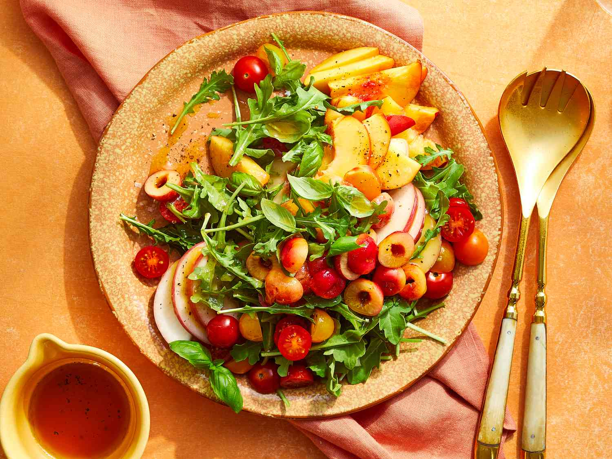

Salad

Description
Prep Time: 20 mins
Total Time: 20min
Servings: 4
These are the basic, kitchen staple ingredients you’ll need to make this simple Arugula Salad with Stone Fruit :
- 2 tablespoons extra-virgin olive oil
- 2 tablespoons red wine vinegar or rosé vinegar
- 3/4 teaspoon salt
- 1/2 teaspoon black pepper
- 1 1/2 cups red cherry tomatoes, halved
- 1 1/2 cups yellow cherry tomatoes, halved
- 1 (5-ounce package) arugula
- 3/4 cup fresh basil leaves
- 2 nectarines, sliced
- 1 large white peach, sliced
- 1 cup Rainier or other yellow-flesh cherries, pitted and halved
- 1/2 teaspoon flaky sea salt
Steps
Wondering how to prepare simple Arugula Salad with Stone Fruit? Here’s a brief overview of what you can expect when you make it:
- Whisk together olive oil, vinegar, salt, and pepper in a small bowl for the dressing.
- Arrange tomatoes, arugula, basil, nectarines, and peach slices on a large platter. Drizzle with half the dressing. Top with cherries, sea salt, and remaining dressing. Serve immediately.